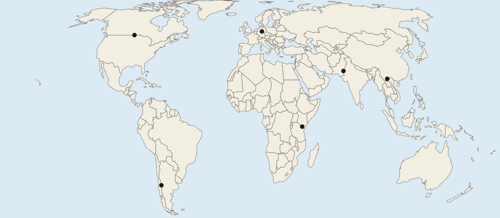

Defining Political Boundaries
Political boundaries mark where one state's territory ends.
Part 1 · Hook
Why this matters
Part 2 · Before you start
What this builds on
Part 3 · Prerequisite check
Quick check before you start
1. What is a state?
- A country with people, territory, a government and recognition
- A group sharing one culture
- A region inside a country
- A city and its suburbs
Show the answer
States are the basic units of the political map.
- Correct: A country with people, territory, a government and recognition:
- A group sharing one culture:
- A region inside a country:
- A city and its suburbs:
2. What is the cultural landscape?
- The visible marks people leave on the land
- The natural land before people
- A map of languages
- The climate of a place
Show the answer
Buildings, roads, fields and walls are all part of the cultural landscape.
- Correct: The visible marks people leave on the land:
- The natural land before people:
- A map of languages:
- The climate of a place:
Part 4 · See it
See it first
![Six small sketches, each with a red boundary line. Antecedent: the line is drawn before many settlers live there. Subsequent: a winding line drawn after settlement. Consequent: a line between two groups of houses of different colors, following a cultural line. Superimposed: a line drawn by outsiders through the middle of one group. Geometric: a straight line along 49 degrees north. Relict: a dashed grey line, a former boundary that no longer works. A note says one boundary can fit more than one type.](../figures/defining-boundaries-types.svg)
Part 5 · Step by step
How it works, step by step
- A boundary is drawn before many settlers arriveit is antecedent, and settlement later grows up around it
- Outside powers draw a boundary without asking the people who live thereit is superimposed and may cut a people in two
- A boundary stops working but its walls or fences remainit becomes a relict boundary, visible in the cultural landscape
Part 6 · Key ideas
Key ideas
- Sort by timing: antecedent boundaries come before settlement; subsequent ones come after.
- Sort by what it follows: consequent boundaries follow a cultural line (India and Pakistan, 1947); geometric ones are straight lines (49° N).
- Sort by who drew it: superimposed boundaries are forced by outside powers (much of Africa). A relict boundary no longer works (the old East and West German line).
- One boundary can fit more than one type: Kenya and Tanzania is geometric and superimposed.
Part 7 · Misconception
A common mistake
The wrong idea: Every boundary fits exactly one type.
What actually happens: The types describe different things (timing, what it follows, who drew it), so one boundary can fit two or three. The US and Canada line along 49° N is both geometric and antecedent.
Part 8 · Check yourself
Check yourself
Exam-style questions. Anything you miss goes into your review queue.
Map
Six boundaries on a world map

1. Mark B shows where a boundary once divided a state from 1949 to 1990. It no longer works as a border, but traces of it remain on the land. Which type is it?
- Relict
- Antecedent
- Consequent
- Geometric
Show the answer
A relict boundary no longer works but can still be seen in the cultural landscape. The line between East and West Germany at mark B is one: watchtowers and a long strip of protected land mark it.
- Correct: Relict: Right: Mark B is the former border between East and West Germany, gone since Germany reunited in 1990.
- Antecedent: Antecedent boundaries are drawn before many settlers arrive, and they still work.
- Consequent: Consequent boundaries follow a cultural line and still work.
- Geometric: Geometric boundaries are straight lines; the old German line wound across the land.
2. Which type of boundary is the one at mark A?
- Relict
- Consequent
- Superimposed
- Geometric
Show the answer
The boundary at mark A follows a line of latitude, 49° N, for about 2,000 kilometers: a geometric boundary.
- Relict: The boundary at mark A still works as a border.
- Consequent: It does not follow a line between cultures; people on both sides share much of their culture.
- Superimposed: It was agreed by the United States and Britain, the powers that governed each side.
- Correct: Geometric: Right: Mark A is on the boundary between the United States and Canada, which follows the 49th parallel (49° N) across the west.
3. Which mark is on a boundary drawn in 1947 to separate areas with mostly Muslim and mostly Hindu populations?
- Mark C
- Mark E
- Mark D
- Mark F
Show the answer
The boundary at mark D was drawn by a British official in 1947 to follow religious majorities, so it is consequent (and superimposed too).
- Mark C: Mark C is on the Kenya and Tanzania boundary, drawn by Britain and Germany.
- Mark E: Mark E is on the Chile and Argentina boundary along the Andes.
- Correct: Mark D: Right: Mark D is on the boundary between India and Pakistan, drawn at independence in 1947.
- Mark F: Mark F is on the China and Viet Nam boundary.
4. At a meeting in 1884 and 1885, European powers set rules for claiming Africa, and many borders were later drawn across the lands of peoples such as the Maasai, now split between Kenya and Tanzania. Which type are these borders?
- Consequent
- Subsequent
- Relict
- Superimposed
Show the answer
A superimposed boundary is forced on an area by an outside power, often ignoring the peoples who live there.
- Consequent: Consequent boundaries follow cultural lines; these cut across them.
- Subsequent: Subsequent boundaries grow from local settlement; these came from outside.
- Relict: These boundaries still work as borders.
- Correct: Superimposed: Right: Outside powers forced them on the land, cutting through existing peoples.
5. How does a subsequent boundary differ from an antecedent boundary?
- A subsequent one is straight; an antecedent one follows rivers
- A subsequent one comes after settlement; an antecedent one comes before
- A subsequent one is no longer used; an antecedent one still works
- A subsequent one is drawn by outsiders; an antecedent one by locals
Show the answer
Antecedent boundaries are drawn before many people settle an area; subsequent boundaries are drawn after, as the cultural landscape takes shape.
- A subsequent one is straight; an antecedent one follows rivers: Shape is not what defines either type.
- Correct: A subsequent one comes after settlement; an antecedent one comes before: Right: The difference is timing: before or after people settled the area.
- A subsequent one is no longer used; an antecedent one still works: A boundary that is no longer used is relict.
- A subsequent one is drawn by outsiders; an antecedent one by locals: Being drawn by outsiders makes a boundary superimposed.
6. Match each boundary type to how it was made.
Boundary types and how they were made
- Drawn before many settlers lived there
- Drawn after settlement, as the land filled
- Follows a cultural line such as language
- Forced on a place by outside powers
- A straight line of latitude or longitude
- No longer works, but still seen on the land
Pick a piece, then the place it belongs. Drag works too. Pick a filled place to take its piece back.
Show the answer
Ask two questions: when was it drawn (before or after settlement), and what does it follow (a straight line, a cultural line, nothing anymore)?
- Drawn before many settlers lived there: Antecedent
- Drawn after settlement, as the land filled: Subsequent
- Follows a cultural line such as language: Consequent
- Forced on a place by outside powers: Superimposed
- A straight line of latitude or longitude: Geometric
- No longer works, but still seen on the land: Relict
Part 9 · Summary
Summary
Part 10 · Up next
What comes next
Part 11 · Connections